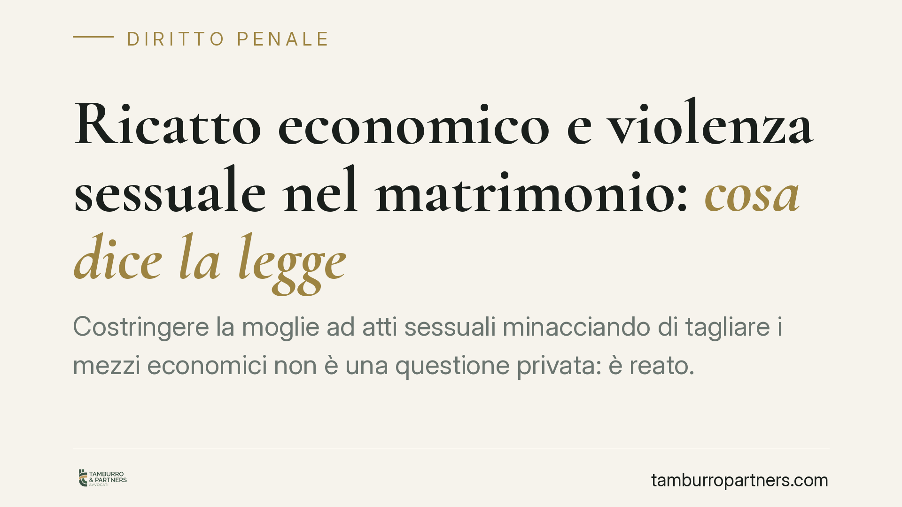

Ricatto economico e violenza sessuale nel matrimonio: cosa dice la legge
Costringere la moglie ad atti sessuali minacciando di tagliare i mezzi economici non è una questione privata: è reato. La Cassazione ha confermato la custodia cautelare in carcere per maltrattamenti e violenza sessuale, ribadendo che la minaccia rilevante può essere anche economica e psicologica. Un punto fermo che merita chiarezza sulle norme applicabili e sulle tutele disponibili.

Il caso
Un uomo costringeva la moglie a rapporti sessuali facendo leva sul controllo delle risorse economiche familiari: la prestazione come condizione per il mantenimento del tenore di vita. Il Tribunale del riesame aveva confermato la custodia cautelare in carcere per i reati di maltrattamenti contro familiari e violenza sessuale. La Corte di Cassazione ha rigettato il ricorso dell'indagato, ritenendo la misura adeguata.
La pronuncia è coerente con un orientamento di legittimità ormai consolidato. Non disponendo dell'estremo ufficiale verificato, segnaliamo la decisione come allineata a un filone giurisprudenziale stabile: i principi che seguono sono quelli pacificamente affermati dalla Cassazione in materia.
Inquadramento normativo
L'art. 609-bis del codice penale punisce chi, con violenza o minaccia, costringe taluno a compiere o subire atti sessuali. Il punto decisivo è la nozione di minaccia: non deve consistere in una costrizione fisica. Può essere psicologica o economica. Prospettare al coniuge la privazione dei mezzi di sostentamento per ottenere un rapporto configura la minaccia richiesta dalla norma.
Nel matrimonio non esiste alcun diritto alla prestazione sessuale. Il vincolo coniugale non comprime la libertà di autodeterminazione della persona: il consenso all'atto sessuale è sempre necessario, è specifico per il singolo rapporto ed è liberamente revocabile in qualsiasi momento. La convivenza o un precedente consenso non costituiscono autorizzazione permanente.
Alla violenza sessuale si affianca spesso l'art. 572 c.p. (maltrattamenti contro familiari o conviventi), quando le condotte si inseriscono in un contesto abituale di vessazioni. Sul piano della procedibilità, va ricordato che dopo la riforma Cartabia l'art. 609-bis c.p. resta di regola procedibile a querela, ma la procedibilità diventa d'ufficio nei casi aggravati, tra cui quelli legati ai rapporti familiari e di convivenza: aspetto che incide sull'avvio e sull'irretrattabilità dell'azione penale.
La misura cautelare: una presunzione relativa
L'art. 275, comma 3, c.p.p. prevede, per alcuni reati di particolare gravità tra cui la violenza sessuale, una presunzione di adeguatezza della custodia in carcere. Occorre però intendersi sulla sua natura: si tratta di una presunzione relativa, non assoluta. Il carcere è la misura da applicare salvo che emergano elementi concreti da cui desumere l'idoneità di misure meno afflittive.
La portata di questa presunzione è stata più volte ridefinita dalla Corte costituzionale, che ne ha progressivamente ridotto l'automatismo per salvaguardare il principio del minor sacrificio della libertà personale. Il giudice conserva quindi un margine di valutazione sul caso concreto; nella vicenda in esame, le esigenze cautelari sono state ritenute compatibili solo con la detenzione.
Implicazioni pratiche
Per chi subisce condotte di questo tipo, la pronuncia conferma che il ricatto economico finalizzato al rapporto sessuale è penalmente perseguibile. La riconducibilità della minaccia a una sfera non fisica amplia l'ambito di tutela e supera la vecchia idea, giuridicamente infondata, di un "dovere coniugale" esigibile.
Sul versante civilistico esiste uno strumento parallelo e cumulabile con il procedimento penale: gli ordini di protezione contro gli abusi familiari (artt. 342-bis e seguenti c.c.). Il giudice può ordinare l'allontanamento dalla casa familiare, vietare l'avvicinamento ai luoghi frequentati dalla persona offesa e disporre, se necessario, un contributo economico a suo favore. Si tratta di una tutela immediata, utile quando occorre interrompere subito la convivenza senza attendere i tempi del processo penale.
Cosa fare in concreto
- Documenta gli episodi: messaggi, registrazioni consentite, referti medici, testimonianze. La prova della minaccia economica è spesso ricostruibile da elementi oggettivi.
- Rivolgiti a un presidio specializzato (centri antiviolenza, forze dell'ordine) per una valutazione del rischio e la messa in sicurezza.
- Valuta la querela per violenza sessuale, verificando con un legale se nel caso concreto ricorra la procedibilità d'ufficio legata al rapporto familiare.
- Chiedi l'ordine di protezione ex art. 342-bis c.c. per ottenere tutele civili rapide, anche in parallelo al procedimento penale.
- Non attendere l'escalation: consigliamo di intervenire ai primi segnali di coercizione, documentando e raccogliendo consulenza prima che le condotte si consolidino.
---
Contributo informativo a cura di Tamburro & Partners Avvocati - Avv. Giuseppe Tamburro. Non costituisce parere legale.
Ogni condominio ha una storia a sé.
Se gestisci un'amministrazione e vuoi un confronto su una specifica questione condominiale, scrivi allo studio. Ti rispondiamo entro un giorno lavorativo.